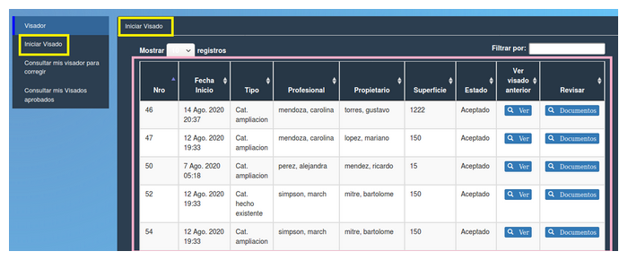

Iniciar visado¶
Al pulsar el botón se desplegará una tabla con la lista de tramites para ser visados. Los campos que se observan en la tabla son:
- Nro (Número de trámite)
- Fecha inicio
- Tipo
- Profesional
- Propietario
- Superficie
- Estado
- Ver visado anterior (Ver)
- Revisar (Documentos)